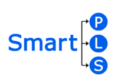

Basic PLS-SEM Using SmartPLS 3.0 One-day
Overview
What is SMART PLS?
SMART PLSis a software with graphical user interface for variance-based structural equation modeling (SEM) using the partial least squares (PLS) path modeling method. Besides estimating path models with latent variables using the PLS-SEM algorithm, the software computes standard results assessment criteria (e.g., for the reflective and formative measurement models, the structural model, and the goodness of fit) and it supports additional statistical analyses (e.g., confirmatory tetrad analysis, importance-performance map analysis, segmentation, multigroup).
Since SmartPLS is programmed in Java, it can be executed and run on different computer operating systems such as Windows and Mac.
Features of SmartPLS
Advantages of SmartPLS
- Easy to control and analyze.
- Introducing Smart PLS as one of the applications that can be used to generate research results
- Produce a boxed and attractive model.
- Have literature and network of support groups around the world.
Benefits of SmartPLS
» Can be used in Master and PhD studies.
» Can be used for pilot study
» Helps generate great seminar and journal articles
Ability of SmartPLS
 Inferential statistical analyzes were used in testing the study hypothesis based on a multivariate analysis of Structural Equation Modeling (SEM) modeling using SmartPLS or more recognizable as PLS-SEM
PLS-SEM is a complex statistical analysis technique that aims to maximize the explanation of variants in dependent variables (Hair, Ringle & Sarstedt, 2011)
PLS-SEM also has the ability to perform graphical analysis of paths to show the direct effects of antecedent variables and indirect effects of the effects of intermediate variables. The PLS-SEM assessment shows the measurement of the measurement model and the structural model with regard to parameter stability.
Program Schedule
| TIME | Activity |
|---|---|
| 8.00 AM - 8.45 AM | Registration |
| 8.45AM - 10.15AM | Session 1: Introduction to PLS-SEM and SmartPLS 3.0 |
| 10.15 AM – 10.45 AM | Break |
| 10.45 AM – 1.00 PM | Session 2: Evaluation of Measurement Model |
| 1.00 PM – 2.00 PM | Solat and Lunch |
| 2.00 PM – 4.15 PM | Session 3: Evaluation of Structural Model |
| 4.15 PM – 5.00 PM | Outlook on advance methods and Q&A |
END OF DAY ONE
Speaker

Kamarul Ariffin Mansor. Currently attached as a senior lecturer in the Department of Mathematical Sciences, Faculty of Computers and Mathematical Sciences, UiTM Kedah. He has been with UiTM Kedah since 2002. His specialization and interest is in statistical and decision making analysis. He is actively involved in consultancy work, especially in statistical analysis using statistical software such as IBM SPSS Statistics, AMOS, SmartPLS, JASP and R. His main research area is in Structural Equation Modeling and Dashboard Design (Excel and R Shiny).
Registration Fee
Normal: RM150
UiTM Staff: RM100
Students: RM80
International: USD40